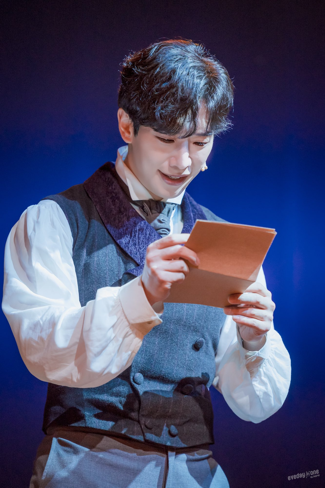

앞자리에서 본 공연이 기억에 깊이 남는다는 것은 김경수의 랭보에서도 느낀 바. 물론 당시에는 매 공연의 디테일들이 기억날 수도 있겠지만 시간이 지나고보면 한 공연당 단 몇 장면만 기억에 남는 경우가 허다하다. 랭보의 경우 가장 강렬하게 기억에 남는 장면은 내가 처음이자 마지막으로 2열 중오블에 앉아서 오만나팔을 부르는 김경수를 봤을 때다.
그전까지도 멀리서 그의 연기를 보며 대단하다는 생각이야 했었지만 그렇게 생생하게 김경수의 연기력을 보고 듣고 느낀 것은 처음이었다. 정말 경악할 정도였는데 숨을 쉴 수가 없을 정도였다. 매순간 절망하고 분노하고 나약해지는데 그걸 어떻게 그렇게 표현할 수가 있을까, 하고 감탄이 아닌 경탄을 자아내던 그 모습. 후두둑 떨어지던 그 눈물.